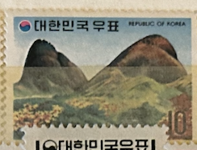
| SOURCE | TITLE| IMAGE MATCH | click to source page |
| Colnect | Stamp: Bukhan Mountain (Korea, South(Tourism issue) Mi:KR 893,Sn:KR 853,Yt:KR 772,Sg:KR 1075 📮 | 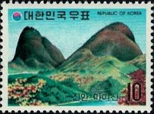 |
| eBay | 1973 Republic of Korea Souvenir First Day Cover FDC and Booklet Tourism Series 5 | eBay | 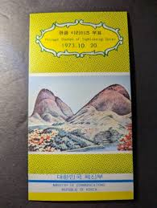 |
| Freestampcatalogue.com | Stamps from Hong Kong - Freestampcatalogue.com - The free online stampcatalogue with over 500.000 stamps listed. | 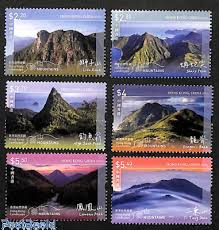 |
| 2003 Mountain Bock Of Fours Complete Set Mint MNH | 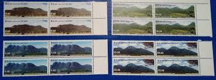 | |
| NAVER | 전라북도 - 지류형(종이) 지역화폐(상품권) 소개 : 네이버 블로그 | 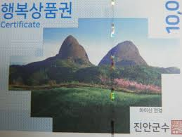 |
| eBay | HONG KONG CHINA 2023 LANDSCAPE MOUNTAINS COMP. SET OF 6 STAMPS MINT MNH UNUSED | eBay | 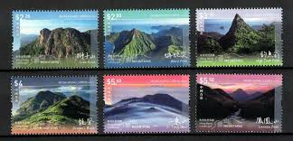 |
| Lucas Brito (lucasbritto2288) – Profile | Pinterest | 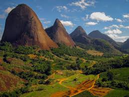 | |
| eBay | International Year of Mountains -LAO PDR SPECIMEN BLOCK OF 4- (MNH) | eBay | 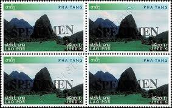 |
| eBay | HONG KONG, CHINA 2023 MOUNTAIN LANDSCAPE stamp set of six, Mint, NH | eBay | 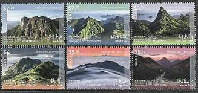 |
| hongkongpost.hk | Hongkong Post - Library - 2023 | 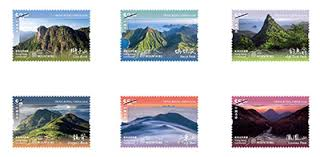 |
| Tripadvisor | Fabulous views from River Inirida - Review of Cerros de Mavecure, Inirida, Colombia - Tripadvisor | 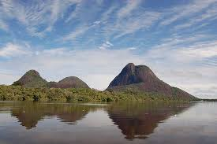 |
| GetYourGuide | The BEST Jeonju Hanok Village Spring activities 2026 - FREE Cancellation | GetYourGuide | 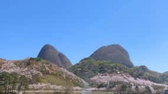 |
| Flickr | upload | ayhan boz | Flickr | 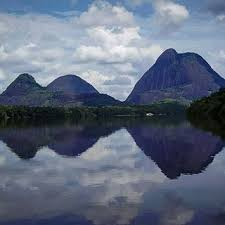 |
| eBay | FREE SHIP Hong Kong Landscape Mountains 2023 Nature Tourism River (stamp) MNH | eBay | 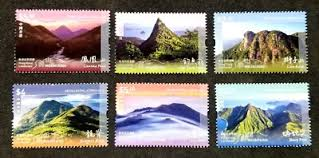 |
| lookphotos | Black river and white sand beach in … – License image – 13705750 ❘ lookphotos | 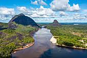 |
| Lulo Colombia Travel | Colombia Itinerary • Lulo Colombia Travel | 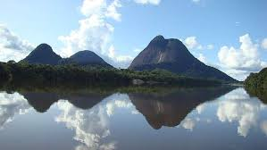 |
| Flickr | Maisan | Maisan(마이산) is located in Jinan-gun, Jeollabuk-do | Republic of Korea | Flickr | 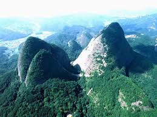 |
| Yoga Edition Singapore | MINSU JEONJU & BUSAN 7D6N | 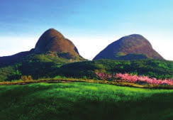 |
| See Colombia Travel. | The Mavecure Hills - lost wonders of the Amazon - Colombia Travel Blog by See Colombia Travel | 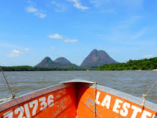 |
| antoniobriceno.net | Antonio Briceño. Gods of America | 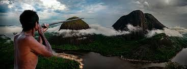 |
| ColombiaOne.com | Colombia's Hidden Travel Destinations Unveiled | 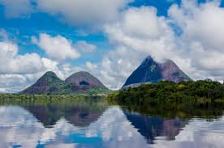 |
| Joel Gamez Empusanando (@joelgamezguainia) • Instagram photos and videos | 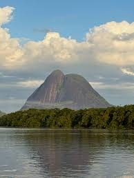 | |
| Wikimedia.org | Category:Inírida River - Wikimedia Commons | 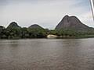 |
| todacolombia.com | Index of /imagenes/departamentos-de-colombia/Guainia | 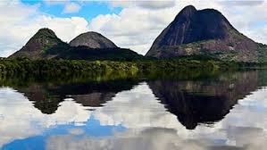 |
| Ecoglobal Expeditions | Archivo Cerros de Mavecure | Ecoglobal ExpeditionsEcoglobal Expeditions | 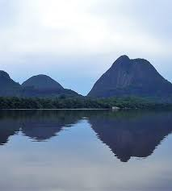 |
| From multi-pitch adventure climbing to granite bouldering, Cumbira Segundo —and Angola in general—has all of the ingredients to become a global climbing destination. Read the full story at the link in our | 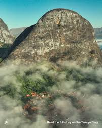 | |
| YouTube | 팔자/강문경 - YouTube | 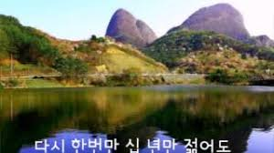 |
| Amazon.com | Amazon.com: Gibraltar 1014-1017 Quad Strip (Complete.Issue.) unmounted Mint/Never hinged ** MNH 2002 Rock (Stamps for Collectors) Landscapes : Toys & Games | 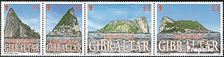 |
| Academia.edu | Carlos Arturo Ramos Garcia - Universidad Nacional de Colombia (National University of Colombia) | 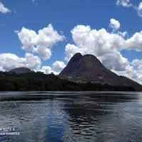 |
| This isn't AI. It's just Colombia being unreal🤯. 📍We're scouting spots that look too good to be real, but they are. 📸: 1. Sierra Nevada de Santa Marta, Magdalena: @guillerodph 2. El | 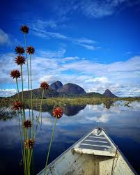 | |
| Robertharding.com | High Quality Stock Photos of "kwanza sul" | 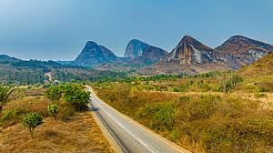 |
| Wikimedia.org | File:Cerros Mavecure a lo lejos - panoramio.jpg - Wikimedia Commons | 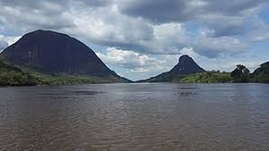 |
| Maisan mountain "Ma" means horse "I" means ears "san" means mountain Does this mountain look like ears of a horse? | 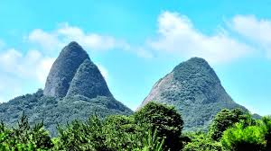 | |
| Free stamp catalogue | Stamps from Japan - Freestampcatalogue.com - The free online stampcatalogue with over 500.000 stamps listed. | 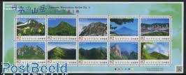 |
| wwfca.org | Inírida, la nueva estrella Ramsar de la conservación en Colombia | WWF | 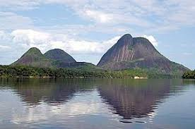 |
| ROC (Taiwan) Stamp : r/PassportPorn | 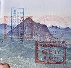 | |
| Florists' Review | The Inírida flowers: A story of resilience and sustainability | Florists' Review | 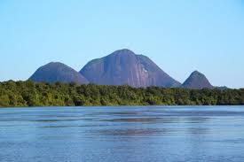 |
| Colombia Reports | Colombia to declare amazonian 'Star River of the South' protected area - Colombia News | 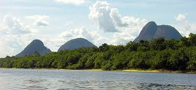 |
| Freestampcatalogue.com | Stamps from Peru - Freestampcatalogue.com - The free online stampcatalogue with over 500.000 stamps listed. | 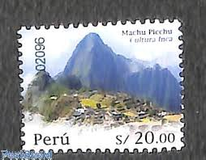 |
| Flickr | juanma30 | Flickr | 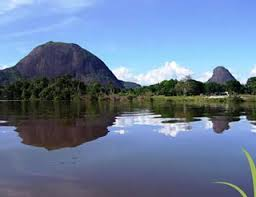 |
| Linns Stamp News | Recent stamps celebrate diplomatic relations between countries | 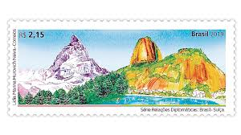 |
| Manakin Nature Tours | Colombian Amazon – One Paradise to be discovered! - Manakin Nature Tours | 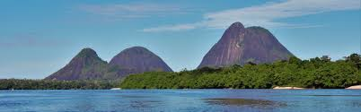 |
| Wikipedia | Bacia dos Frades Environmental Protection Area - Wikipedia | 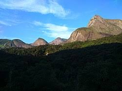 |
| eBay | Avstralia 2021 , Volcanic Past , S/S , Limited Edition , Odd form ,Unusual . | eBay | 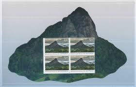 |
| ardeaprints.com | Venezuela - Tepui Landscape Print. Art Prints, Posters & Puzzles from Ardea | 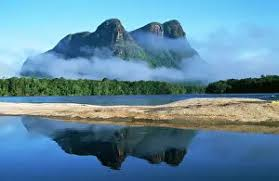 |
| eBay | International Year of Mountains -LAO PDR SHEET BO(I)- (**) | eBay | 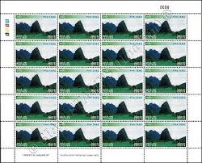 |
| Flickr | IMGP3249r | Mt. Maisan Provincial Park is located in Jinan-g… | Flickr | 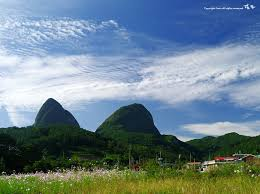 |
| Córrego Palmital-Pancas - ES Córrego Palmital- ES | 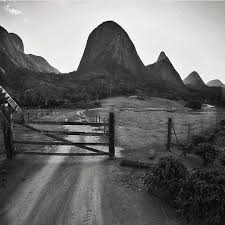 | |
| Panda.org | Inirida, a conservation star | 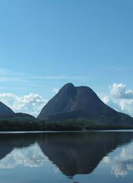 |
| eBay | Australia Plants Postal Stamps for sale | eBay | |
| Bosco Bonilla (@soyyobo) • Instagram photos and videos | ||
| Mountain Project | Rock Climbing in Cunduvile, Conda | |
| Bharat Exotics | Products – tagged "foreign" – Page 19 – Bharat Exotics | |
| Birding Tours Colombia | Amazon to Anchicayá: A Colombia Birding Trip Report (2019) - Birding Tours Colombia | |
| A hundred million years ago, tectonic movements caused the lake bed, where sediment layers had accumulated, to rise into two peculiar peaks. These two towering peaks, resembling the pointed ears of a | ||
| eBay | Korea - 2018 Imperforated - MNH - (6467) Birthday Kim Jong Il | eBay | |
| Go and Travel | Travel to Mavecure, and how to do it the best way - Go and Travel | |
| armenianstamps.com | Font 4-071d> Nagorno Karabakh #71-72 Shushi Liberation 20th Anniversary Se-tenant sheet of stamps + Labels Combo Sheet Sheet contains 4-se-tenant sets + 2 labels perf | |
| Shutterstock | Maisan Mountain Jinan City South Korea Stock Photo 1145054891 | Shutterstock |
{kind=link}
{kind=link}